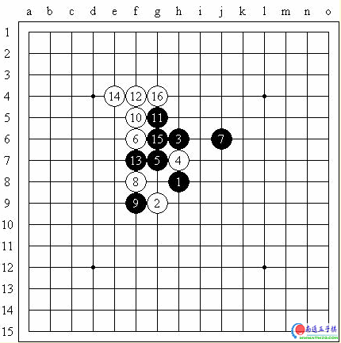
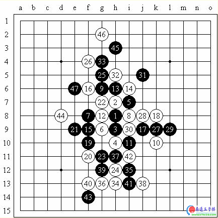
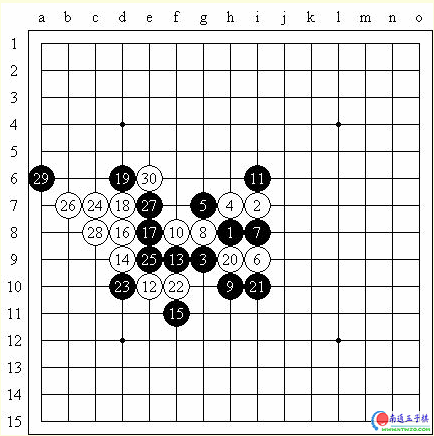
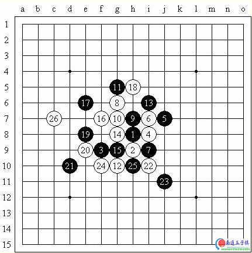
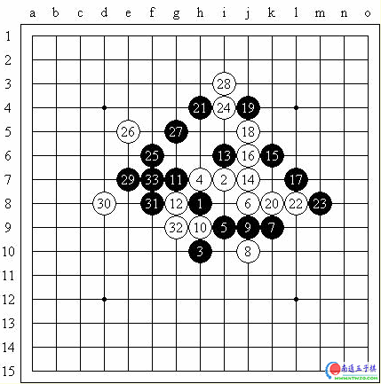

龙潭庙会 五子日记
#1 龙潭庙会 五子日记 作者：有志青年 发表时间：2007-2-22 8:53:42
传说中的流水帐式……
说好去龙潭庙会玩五子棋的，今儿真就去了，早上8：20左右就到了（到早了），还碰见赵子轩他们一家了。我给师晓林打电话，或者说我以为他要么在里面，要么出发了，结果他告诉我还没出家门呢！事实证明，虽然云飞后来告诉我说他十点到，不过他最终还是10：20到的，晕……还接我呢，诶……
后来周挥老师来了，把我们带进去了，还发了我一工作证。哈哈哈，再也不用看那帮看门的大老爷们儿的眼色咯！
进去，鞋扎了个钉子，郁闷，怪疼的，还好没伤到脚，进棋室后拔掉。
和赵子轩小朋友下了一盘：2007年2月19日龙潭庙会五子棋，疏星局，交换（被迫），5A＝f8，（屏蔽）（黑）胜赵子轩（白）。

我被迫交换了……算了，黑棋也不是不能走，特别是这个传说中的一打。小赵同学似乎就会这一个局面。说实话啊，他下得不是不好，但对棋缺乏一个全面的理解，希望他接触一些别的局面，打好基础，再练好这个定式。黑11我变一下不走白12位，他白14就晕菜了，黑棋若反向防守白棋有禁可抓。接下来到黑23其实都还行，不过白24太过了。以下乱七八糟的交换，好坏什么的就是那么回事，反正我左边有先手，右边有（小小）优势。白38没防好，一下就局部杀了，可怜的小赵……
然后开始狂下棋。（事后证明赢一盘一块钱，明、后两天更要狂下啦，^_^）
大多都是无禁的，执白，来一个切一个。后来竟然有个想让我执黑的！开云月必胜，速杀，惩戒一下你高傲的心态。（我是不是太坏了？哈哈哈……）
过一会儿，云飞来了。再过一会儿，师晓林来了。师晓林那个……竟然和我切无禁！靠！最后我白棋防得有点太紧了，没办法啊……后来他误算，没攻下来，但是我也没机会赢的，交换一下就和了。棋谱记不得了！因为无禁实在没有太成型的逻辑，抱歉大家……后来又杀了一盘正式规则的斜月，我和师晓林都体会到了不理解定式的郁闷之处！棋谱：2007年2月19日龙潭庙会五子棋，斜月局，交没交换忘了……5A＝f9，师晓林（黑）负（屏蔽）（白）。

从黑7和黑11的手段来看，典型就是考我定式！考着了，白12、14我真不知道该放哪。刚看的谱库：白12可行，白14在黑15位强防！以下黑23妙手必胜（当然是谱妙，师晓林嘛……也有可能走出来，哈哈）！白24狗急跳墙（我是不是有点贱……），研究表明黑27防白32位最强，不过看起来师晓林的防守没有我想象中的那么强……黑29冲四也没用，白30妙手必胜（这可真的是我自己临场发挥啊，哈哈哈）！
继续狂下棋呢……中午11：40左右吧，和师晓林还有云飞一起出去吃饭，羊杂、肉串、侃大山，中午搞定。
中午去试切王硕，听着怪吓人的……结果……王硕啊王硕，你咋就没个主心骨呢？师晓林啊师晓林，你太会忽悠了（你太有才了）！2007年2月19日龙潭庙会五子棋，斜月局，不换，5A＝f9，（屏蔽）（黑）胜王硕（白）。

王硕正考虑白4还是交换，师晓林忽悠：“骗他，就用你教我那个骗！”哪个？王硕实际上记不清了，走这个白4，王硕也记不起来强防的谱，只剩下师晓林给他的骗了。哈哈，王硕要是强防的话，黑优啊，我能杀么？不一定吧？哈哈……白12跳三是大骗，又是师晓林忽悠王硕走的，连三的话后面我不一定能杀呢～师晓林为王硕拉开了失败的序幕……真可惜，直到黑21我的谱都完全正确，黑优……白22又弱，云飞说在h5是最强防。黑23强攻，王硕终于被师晓林忽悠得直接认输了。王硕你个健忘的，忘了全国赛切张弛的那局啦？白24－e6唯一防啊！真没成就感……下次还是要认真试炼一下我和王硕的差距，特别是在师晓林不在的情况下！
下午接着下，本来说和他们一起去打台球的，不过在周老师的坚决反对下（我和曹冬）作罢了。
反正一直挺爽的，全天一个美女都没切到，郁闷……
再后来挑战菜农梁大伟，是强，不过那局实在有点憋屈，俩防守风格的棋碰在一起就是这样：2007年2月19日龙潭庙会五子棋，斜月局，不换，5A＝i8，（屏蔽）（黑）和梁大伟（白）。

黑11是我的原创，防守状态，以守待攻，可是梁大伟今儿是防守模式，所以这个11用处就不大了……白18要是在e6激情一下呢？哈哈……白20强攻，黑21好棋（自认为）！黑29妙手（全是我好了，今儿果然比较high）！然后就攻啊防啊，没杀下来，黑53后对局因故中止。俺试探：“和棋？”梁大伟感慨一声：“和了和了！”
啊，他上午还恭喜我上清华来着。未来切云飞的人？哈哈哈，殷老师您这希望真不错，这个未来可真远（希望不远，哈哈）。
#2 Re:龙潭庙会 五子日记 作者：有志青年 发表时间：2007-2-22 9:02:13
原定的是去三天，不过昨天实在有点累，而且有点发烧（没看昨天都没写日记么）……所以今天就不去了，就只有上下两篇啦……诶……继续流水帐……
早上一推门竟然看见师晓林了，服了，一个人在那拆斜月一打呢，佩服一下，后来抽空说了一下明星弱6黑棋的胜法，又交流了两局，竟然走错定式了，哈哈。2007年2月20日龙潭庙会五子棋，明星局，不换，5A＝i7，（屏蔽）（黑）负师晓林（白）。

说实话，他说是要弄我不会的，这个局面两打之后我也确实不会了，哈哈，不过说实话，以我们两个的棋力（不是我，是我们两个），这个局面杀下来没问题（不是我自夸啊……）。不过我记得定式里面有黑7这么一手——事实证明没有这个黑7，形状相似，应该在j8进攻，必胜，我就给走岔了！白8强烈反击，弄得我超郁闷。事实证明黑9可能比较弱吧，并且师晓林同学的进攻也不是那么弱弱的，白10好棋！我找不到好的防守，黑11后白棋追胜了。
还有一盘彗星，我不会，变流星了（玩嘛，不过他超郁闷，哈哈哈！）他给了我一打和一个“必败”，幸好我不会那个必败，回家查完谱才发现那个必败我胜不下来的，留下来一打（谱我还会点，他的定式积累好像真的没我多），他又超级郁闷。开局好像就走错了，我记得那个形式不是黑必胜就是黑必败，不过我也不会，进攻了几手，局面变平衡了，不过没下完，就不帖谱了，呵呵。
今天的对局其实并不顺利啊，大多是输，可能和我开始执黑不习惯有根大关系吧！
昨儿说了要和云飞交流的，我还没过去呢，他就过来了，他和我对局的历史从此拉开——并且第一局就是难以抹杀的失败，哈哈哈！2007年2月20日龙潭庙会五子棋，松月局，交换，5A＝j9，（屏蔽）（黑）胜仇云飞（白）。

松月开局我想了半天还是换了，没给一打（反正不会，二、三打你随便挑吧）。黑9……算了，也没什么不好，也是定式么，但是我忘了云飞的定式积累比我多啊！这个白10一出我就晕了，事实上任何白10我都不会，我就打算这么进入中盘的（我还真挺有病的）。不过凭借我强烈的棋感，黑11、黑13、黑15走的竟然都是棋谱！哈哈……云飞白16挺好，黑17，白18！我晕！师晓林继续忽悠说松月局怎么白棋主动了？黑19～黑25无奈，其中白24和白26要是反向防守的话，我估计就算能杀，死的也是我，幸好云飞稍微保守了。黑29之后发现局面没有想象中的那么糟糕！黑33防守后，白34、白36激烈！不过以下变化至黑43，个人感觉处理得不错。白44失误，黑棋直接追胜。
殷立成说黑45在k5进攻把白棋做死，经常做棋忽略直接进攻的手段是殷老师的习惯，以后或许可以利用以下呢？呵呵……
不过仇云飞毕竟不是吹出来的，再来一局我最近才开始喜欢的斜月，被他攻死了。2007年2月20日龙潭庙会五子棋，斜月局，不换，5A＝i8，（屏蔽）（黑）负仇云飞（白）。

一打还是不会，继续我的思路，黑11原创！至今（包括这盘）的表现都不错，但云飞实在太猛了，一直进攻！白20防一手，黑21其实也好棋，黑23没细算，只有防在d11才可以，以下白30是我思考的盲点，白棋简单胜。
接下来还是殷立成拉客我们接客……狂下，今天超爽，经常有人买一堆票不下那么多的，哈哈，一堆财神爷，今儿总共67张票外加三次守擂，82元进帐，发了……
攻擂的里面有俩好像曹冬都认识，第一个太烂，斜月变花月着着弱防速被我虐；第二个感觉很强，频频长考，长考出臭棋，又被我追胜了，哈哈哈。
下午看见王硕了，不过没和他下；也没和赵京京下。坐到东面之后人就少了，真是，要是坐西面多好啊，哈哈！
最后和曹冬切了两局，连败，郁闷。2007年2月20日龙潭庙会五子棋，残月局，交换，5A＝g10，（屏蔽）（黑）负曹冬（白）。

题外话，曹冬就是没云飞好，开局朝自己……白8没见过，不过以下到白20自我感觉应对得不错，甚至黑棋还有优势，黑21就……被白棋简单抓禁了……诶……差距啊……
2007年2月20日龙潭庙会五子棋，明星局，交换，5A＝g10，曹冬（黑）胜（屏蔽）（白）。

定式开始，我的白16甚至都是对的！黑17太强不好应对，白20无奈。黑21好棋！白22又随手，白24只好如此。之后黑棋简单追胜。（这个计算力太恐怖了……）
回家咯～下次再相聚吧！
#3 Re:龙潭庙会 五子日记 作者：news 发表时间：2007-3-6 18:22:48
谢谢原发贴人，和转帖的有志。。
不知道他是不是联众的屏蔽。我们过去下过，呵呵
#4 Re:龙潭庙会 五子日记 作者：gerbo 发表时间：2007-3-9 21:41:42
真是羡慕啊，能和这么多的高手对战，真是人生的乐趣，希望以后能和作者一战，哈哈，赢了请客的，看不晕死你 ~~！
~~！
#5 Re:龙潭庙会 五子日记 作者：小玄 发表时间：2009-4-1 6:33:46
一楼的图片看不到了